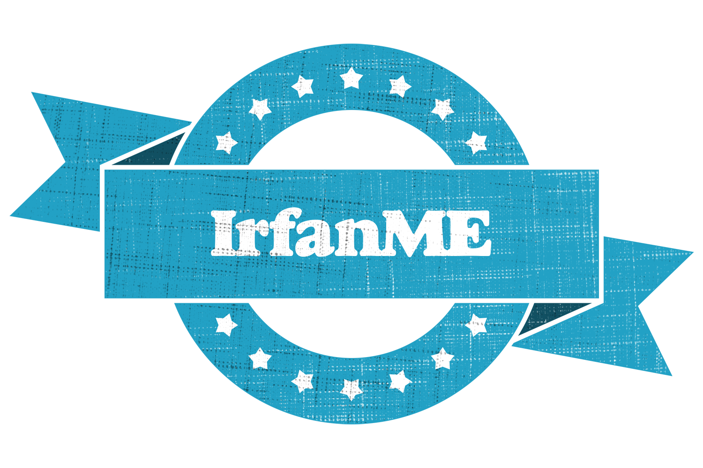

<nav class="bg-white border-b border-gray-200 shadow-md fixed top-0 left-0 w-full z-50">
  <div class="container mx-auto px-4 py-4 flex justify-between items-center">
<a href="index.html"></a>

    <!-- Hamburger Icon -->
    <button id="menu-btn" class="md:hidden text-gray-700 focus:outline-none" aria-label="Toggle menu">
      <svg class="w-8 h-8" fill="none" stroke="currentColor" stroke-width="2"
           viewBox="0 0 24 24" stroke-linecap="round" stroke-linejoin="round">
        <path d="M4 6h16M4 12h16M4 18h16" />
      </svg>
    </button>

    <!-- Desktop Menu -->
    <ul class="hidden md:flex space-x-10 text-gray-700 font-medium">
      <li><a href="index.html" class="hover:text-blue-600 transition">Home</a></li>
      <li><a href="index.html#about" class="hover:text-blue-600 transition">About</a></li>
      <li><a href="projects.html" class="hover:text-blue-600 transition">Projects</a></li>
      <li><a href="index.html#services" class="hover:text-blue-600 transition">Services</a></li>
      <li><a href="resume.html" class="hover:text-blue-600 transition">Resume</a></li>
    </ul
  </div>

  <!-- Mobile Menu -->
  <div id="mobile-menu" class="hidden absolute top-full left-0 w-full bg-white shadow-md z-40 px-4 pb-4">
    <ul class="flex flex-col space-y-3 text-gray-700 font-medium">
      <li><a href="index.html" class="block hover:text-blue-600 transition">Home</a></li>
      <li><a href="index.html#about" class="block hover:text-blue-600 transition">About</a></li>
      <li><a href="projects.html" class="block hover:text-blue-600 transition">Projects</a></li>
      <li><a href="index.html#services" class="block hover:text-blue-600 transition">Services</a></li>
      <li><a href="resume.html" class="block hover:text-blue-600 transition">Resume</a></li>
    </ul>
  </div>
</nav>
